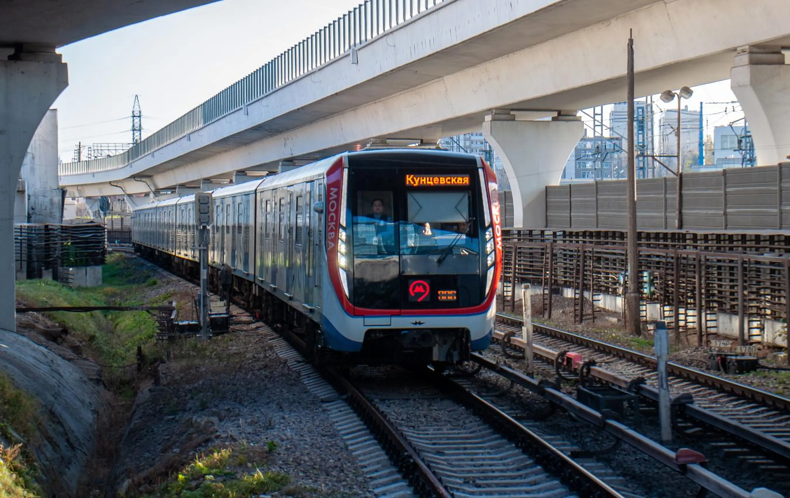
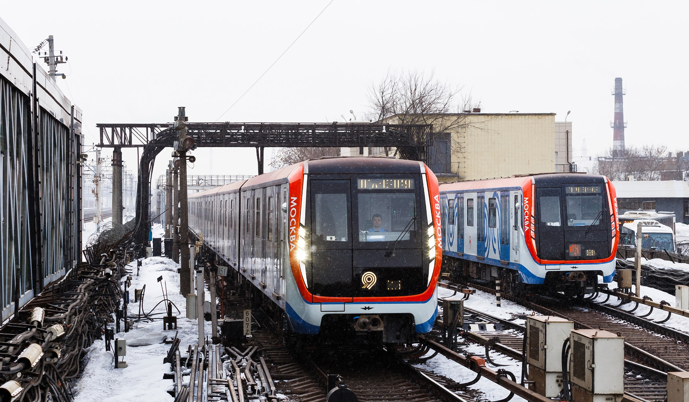
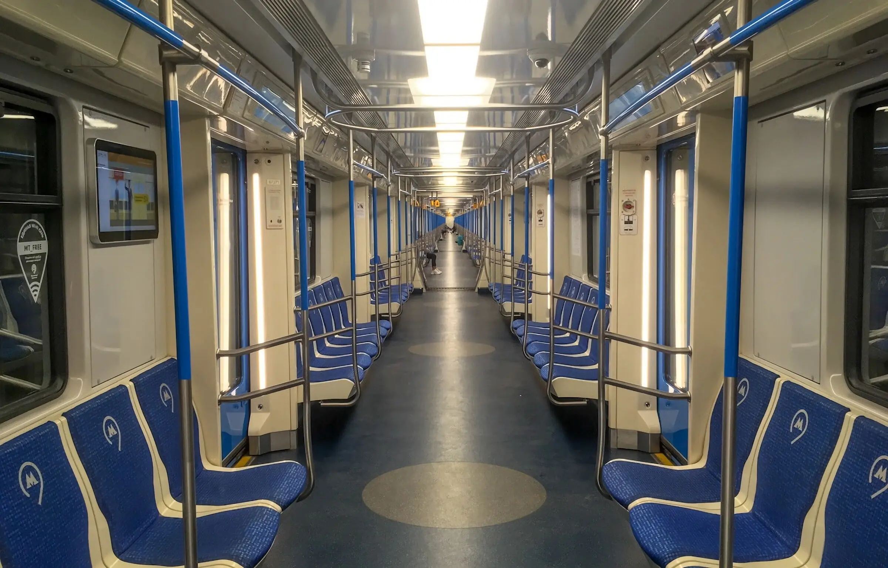
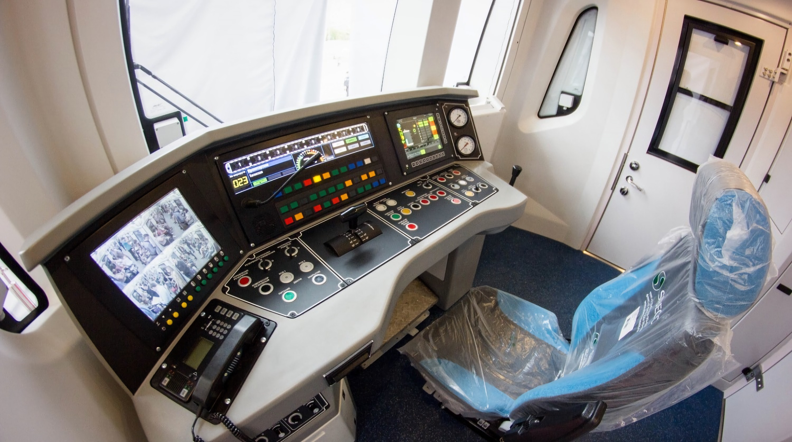

Характеристики «Москвы» одинаковы, но различны в мелких деталях
Метропоезд 81-765 «Москва»
81-765 / 766 / 767 — 81-76 - серия, 5 - моторный головной, 6 - моторный промежуточный, 7 - прицепной промежуточный. Выпускался с 2016 по 2020 год на Метровагонмаш, Октябрьском электровагоноремонтном заводе. Построено 234 состава.
Самый современный и перспективный электропоезд в Москве. Технически является развитием электропоезда 81-760 «Ока». Изменения коснулись маски кабины, появилась крэш-система безопасности и уменьшено число сидячих мест. Двери стали шире для большей пропускной способности в час пик. Поезд имеет межвагонные переходы по всему составу.
В феврале 2017 года начато серийное производство, а в апреле поступили в эксплуатацию 6 составов на Таганско-Краснопресненскую линию. Сейчас московское метро постоянно заказывает новые составы. Метро Баку, Казани и Ташкента тоже эксплуатируют данный тип метропоезда.
Технические Характеристики:
Г-моторный головной, П-прицепной промежуточный, М-моторный промежуточный
- Вместимость — 2×315 чел. (Г) и 6×329 чел. (П и М)
- Сидячие — 2×37 мест (Г) и 6×44 место (П и М)
- Высота — 3680 мм
- Длина — 2 × 20 120 мм (Г) и 6 × 19 140 мм (П и М)
- Ширина — 2686 мм
- Колея — 1520 мм
- Конструкционная скорость — 90 км/ч
- Минимальный радиус прохождения кривых — 60 м
- Мощность ТЭД — 6 × 4×170 кВт (4080 кВт)
- Тип ТЭД — асинхронные, TME 43-23-4
- Род тока — постоянный (750 В)
- Служебная масса — 38 т (Г) и 36 т (П), и 29 т (М)
- Составность — 8 вагонов
Последователи:
- Метропоезда 81-725 «Smart» и 81-775 «Москва 2020»
Эксплуатация
- Азербайджан: Баку
- Узбекистан: Ташкент
- Россия: Казань, Москва
  
сделали Лядов Тимофей и Никитин Станислав